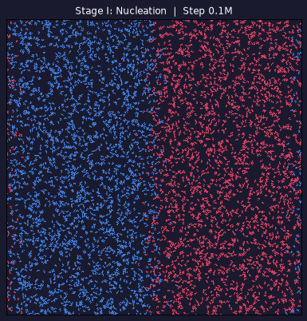

Crystallization & Spontaneous Chiral Resolution in 2D
Based on Carpenter & Grünwald (JACS 2020)
Reproduced molecular dynamics simulations of chiral molecule crystallization using HOOMD-blue. Demonstrated spontaneous chiral resolution through a three-stage protocol: nucleation via controlled cooling, crystal growth through coalescence of enantiopure aggregates, and simulated annealing that drives chiral purification while dissolving disordered clusters.
